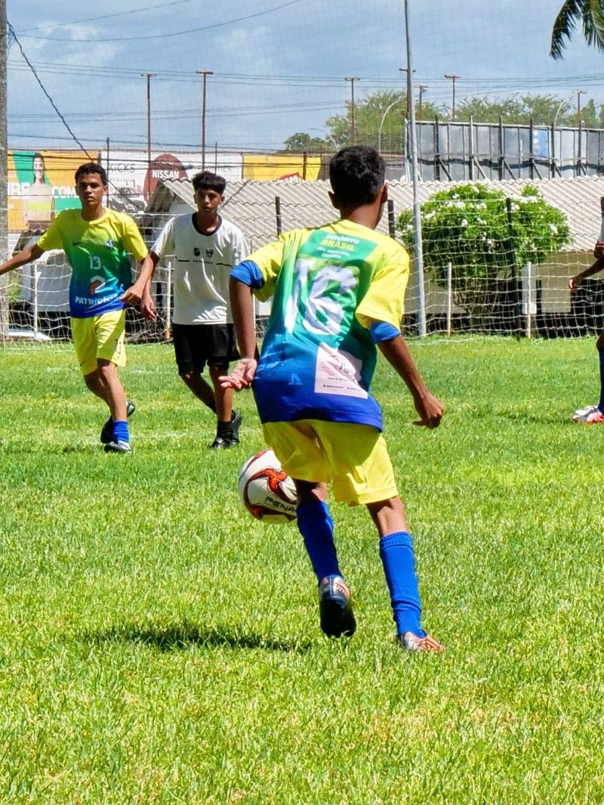

Chute
Finalização e pontaria para marcar gols.
100%
Tenho 17 anos, sou estudante do Senac e estou dando meus primeiros passos no mundo da programação. Atualmente, estou aprendendo HTML, CSS e JavaScript, transformando ideias em projetos e evoluindo a cada linha de código.
Sou Arthur, tenho 17 anos e estou no primeiro ano do Ensino Médio. Sou estudante do Senac e estou descobrindo o universo da programação por meio dos meus estudos. Estou aprendendo a desenvolver páginas web com HTML, estilizar interfaces com CSS e adicionar interatividade com JavaScript.
Fora das telas, eu adoro jogar bola e sou apaixonado por futebol. Sou uma pessoa alegre e engraçada, e levo esse jeito para tudo o que faço.
Ainda estou no começo da minha jornada, mas quero continuar aprendendo, praticando e criando projetos cada vez melhores.
O que eu faço de melhor dentro de campo. Cada barra mostra o meu nível.

Finalização e pontaria para marcar gols.
Controle de bola para receber bem e manter a posse.
Ginga e velocidade para passar pelo marcador.
Meus primeiros projetos de programação. Clique para ver o código no GitHub.
Projeto de site para uma clínica, feito durante o curso.
Ver no GitHubCalcula o índice de massa corporal a partir do peso e da altura.
Ver no GitHubPrática de manipulação do DOM para deixar a página interativa.
Ver no GitHub